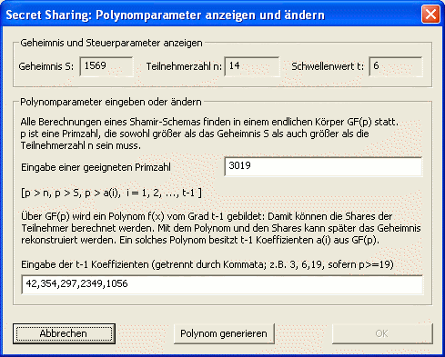

Wurde bereits ein Polynom generiert und werden evtl. sogar die Shares der Teilnehmer berechnet, ist es immer noch möglich, diesen Teil des Schemas zu ändern.
Auf Basis der Ausgangswerte S, t und n kann jederzeit über den Button Polynomparameter ändern im Setup-Dialog eine entsprechende Maske aufgerufen werden.

Zuoberst werden die in dieser Situation unveränderbaren Werte des Shamir-Schemas angezeigt. Darunter stehen in separaten Feldern die aktuelle Primzahl p und – durch Kommata voneinander getrennt – die Koeffizienten des Polynoms.
Nun bestehen zwei Möglichkeiten, die Parameter zu ändern:
Zum Einen kann durch Anklicken des Buttons Polynom generieren eine neue zufällige Primzahl erzeugt werden (die Polynomkoeffizienten werden automatisch angepasst).
Zum Anderen können Änderungen manuell vorgenommen werden. Übernommen werden diese durch den OK-Button, wobei manuelle Änderungen noch hinsichtlich ihrer Korrektheit überprüft werden. Sollte eine Angabe nicht den Vorgaben des Shamir-Schemas entsprechen, weist CrypTool Sie darauf hin.